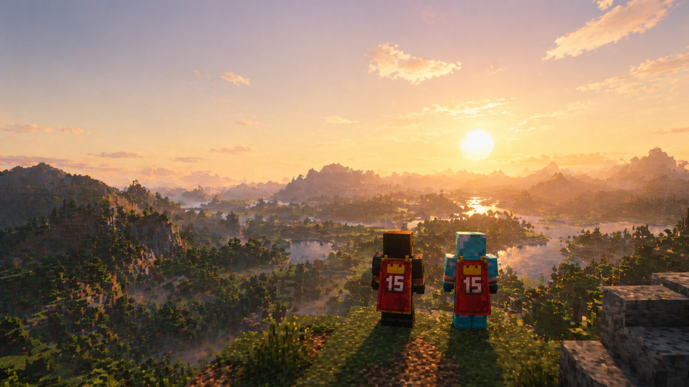

强制同步
核心模组、联机配置
始终与服主一致
为 Minecraft 模组服打造的整合包更新系统
名称 · 封面 · 强调色 · 新闻 · 自定义页面 · 背景音乐
mods/create-1.21.1-6.0.4.jar 等 7 个新增机械动力与附属mods/jei-19.21.2.jar直接装稳定版，问题版本从没下载过config/dreamhaven/quests.json强制同步，和服主保持一致mods/OptiFine_HD_U_J1.jar服主已移除这个文件，副本已备份mods/xaeros-minimap-24.1.0.jar与整合包中的同一模组重复，已移出光影与美化你选择了关闭，保持不安装mods/OptiFine_HD_U_J1.jar----移除玩家副本（持续生效，先备份）⌄mods/create-1.21.1-6.0.4.jar普通同步22.1 MiB--mods/dreamhaven-quests-2.0.jar强制同步4.3 MiB--mods/jei-19.21.2.jar普通同步1.4 MiB--config/dreamhaven/quests.json强制同步36 KiB--resourcepacks/DreamHaven-UI.zip首次提供20.8 MiB--显示版本：1.7
新增 2 · 更新 3 · 移除 1 · 规则变化 0
移除玩家副本（持续生效，先备份）：1 个
发布后该版本内容不可修改。
核心模组、联机配置
始终与服主一致
大多数模组与资源
跟随更新，玩家可停用
初始配置、模板文件
只给一次，之后归玩家
这些选择只保存在玩家自己的电脑上

服主把下面的内容设为可选，你可以按电脑配置决定是否安装。关闭后，相关模组会移出游戏并保留在本机，随时可以重新开启。
更新器不会直接删除你的文件：被替换、清理、撤回或恢复默认的本地文件都会先移到这里，需要时可以放回游戏。
打开备份文件夹断电 · 崩溃 · 强制关闭
检测到未完成的更新事务，正在按日志回滚…
✓已自动恢复到更新前的状态签名不符、文件损坏或被篡改，一律拒绝安装。
GitHubhanhanyu666/DreamingFish-Updater
官网文档dreamingfish-studio.github.io/DreamingFish-Updater-Website
下载玩家端 Windows · 管理端 Windows / Linux · 免装 Java
BGM：原创配乐
官方宣传片 · 约 2 分钟 · 建议全屏并打开声音
空格 播放/暂停 · ← → 切换章节 · F 全屏 · M 静音 · R 重播